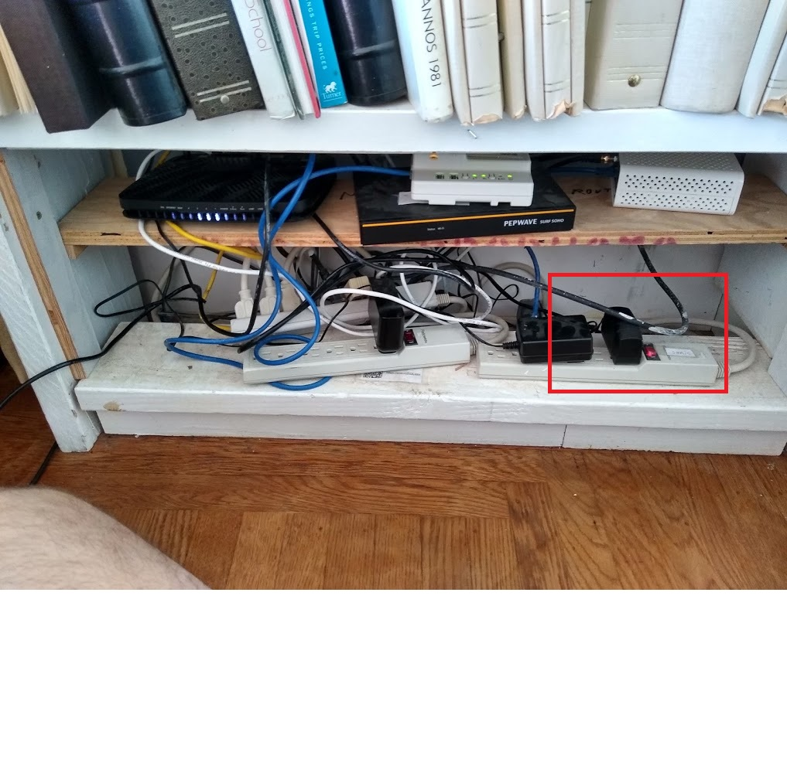
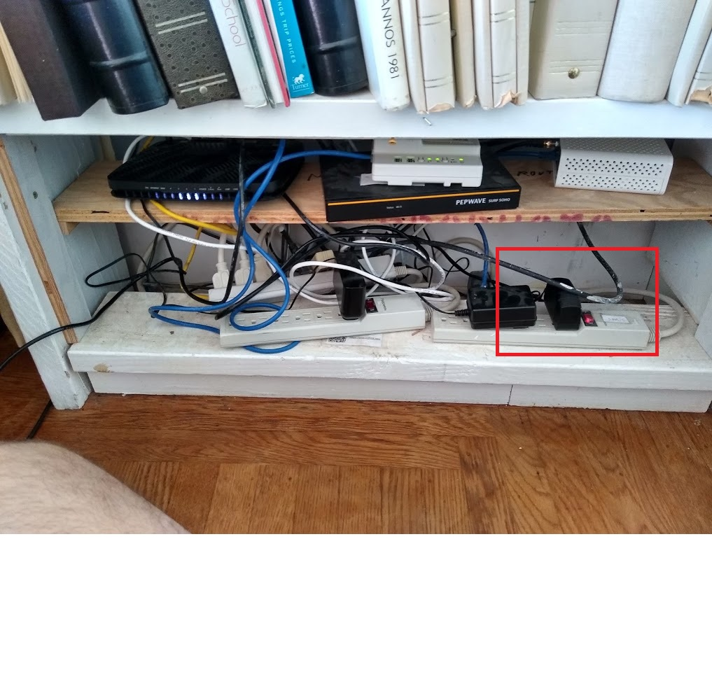

Remove the machine shelf cover:
Do not touch any of the wiring. Use the labeled power strips at the bottom to restart the adyn router, the adyn_pep router or the comcast modem.

There are five separate Wi-Fi access points in the house:
adyn3, adyn4 and adyn5 are plug-in WiFi networks. Normally adyn3 lives in the rear bedroom. adyn4 and adyn5 are usually plugged in upstairs, but can be moved if you prefer. They also accept ethernet if you have wired devices.
All the networks depend on the Comcast cable modem and the adyn_pep router. The adyn network depends also on the adyn linksys router. adyn3, adyn4 and adyn5 also depend on their own internal routers.
The plug-in routers can be restarted simply by pulling them out of the wall and reinserting them.
The other routers and modem live on the machine shelf:
Remove the machine shelf cover:
Do not touch any of the wiring. Use the labeled power strips at the bottom to restart the adyn router, the adyn_pep router or the comcast modem.

| e-mail Nelson: nelson.sproul@gmail.com call/text Nelson: (209)677-7685 | e-mail Deirdre: dvsproul@gmail.com call/text Deirdre: (415)370-6422 | 1209 Glen guide home page |